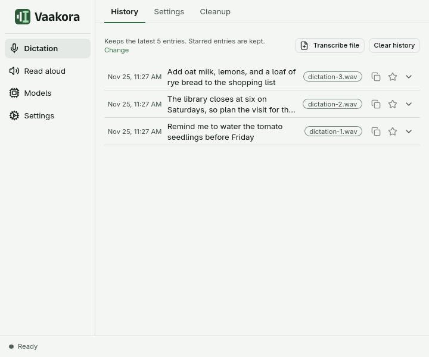
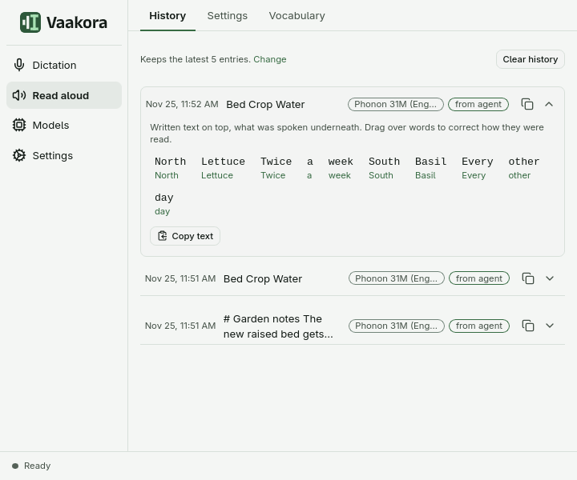

History
Vaakora keeps a history of your dictations and a separate history of your reads. Both are kept on this computer.
Dictation

- Cleaned entries say "Cleaned with" the model that produced them, and a Compare view shows the cleaned text against the raw text.
- Copy and Star are buttons on each entry. A Clear history button removes all unstarred entries and their recordings, and asks first.
- Transcribe a file adds an audio file to History.
Read aloud

- Reads are listed newest first, with the start of the text, the voice model and voice, and a Copy button.
- Text only: the app never keeps audio for a read.
- One read opens at a time and shows each written word with the words that were said for it.
- Reads that come from the command line or an agent carry a small "from agent" tag. A read you start with the shortcut is not tagged.